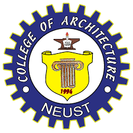

Architecture is one of the most fascinating and challenging fields of study. It is an art and science that involves the design and construction of buildings and structures that are both functional and aesthetically pleasing. Architecture courses offer students a chance to learn the technical skills and design principles needed to create spaces that are both beautiful and functional. One of the top universities in the Philippines that offer a degree in Architecture is the Nueva Ecija University of Science and Technology (NEUST). Founded in 1906, NEUST is a public research university located in the province of Nueva Ecija. It is one of the largest universities in Central Luzon and is known for its excellent academic programs, state-of-the-art facilities, and highly qualified faculty members.
NEUSTs Bachelor of Science in Architecture program is a five-year course that equips students with the knowledge and skills needed to design and build structures that are both aesthetically pleasing and functional. The program is designed to provide students with a strong foundation in architecture and covers a wide range of subjects such as architectural design, building construction, structural engineering, building technology, and architectural history. One of the strengths of NEUSTs Architecture program is its faculty members. The program is staffed by highly qualified and experienced faculty members who are experts in their respective fields. They are committed to providing students with a high-quality education and are always willing to go the extra mile to help students achieve their academic goals. The faculty members use a variety of teaching methods such as lectures, group discussions, and hands-on activities to ensure that students understand the material and are able to apply what they have learned in real-life situations. NEUSTs Architecture program also has state-of-the-art facilities that provide students with a conducive learning environment. The program has a dedicated Architecture Building that houses classrooms, studios, and workshops. The studios are equipped with drafting tables, computers, and software that allow students to create and present their designs in a professional manner. The workshops are equipped with tools and equipment that enable students to build and test their designs.
Another strength of NEUSTs Architecture program is its emphasis on practical training. The program requires students to undergo on-the-job training (OJT) in their fourth year of study. This gives students an opportunity to apply what they have learned in a real-life setting and to gain practical experience in the field of architecture. The OJT also allows students to develop important skills such as teamwork, communication, and time management. NEUSTs Architecture program also offers opportunities for students to participate in various activities and events that help enhance their learning experience. The program has a student organization, the NEUST Architectural Society, that organizes events such as design competitions, field trips, and community outreach programs. These activities allow students to apply their knowledge and skills in real-life situations and to interact with professionals in the field of architecture. Upon graduation, students of NEUSTs Architecture program are equipped with the knowledge and skills needed to pursue a career in the field of architecture. They can work in various industries such as construction, design, and real estate. Some graduates choose to pursue further studies and obtain a masters degree in architecture or related fields.
In conclusion, NEUST’s Architecture program is an excellent choice for students who are interested in pursuing a career in the field of architecture. The program provides students with a strong foundation in architecture and covers a wide range of subjects that are essential for success in this field. The program’s faculty members, facilities, and emphasis on practical training ensure that students receive a high-quality education that prepares them for the challenges of the real world. Students who graduate from NEUST’s Architecture program are well-equipped to pursue a rewarding career in the field of architecture.